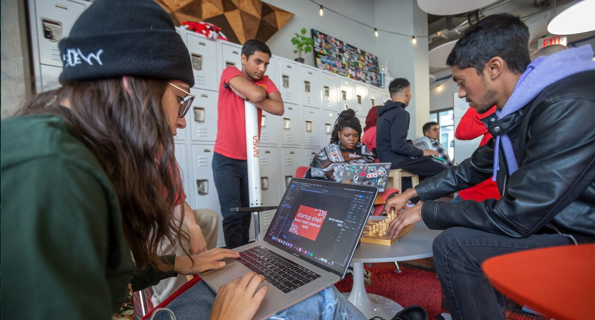
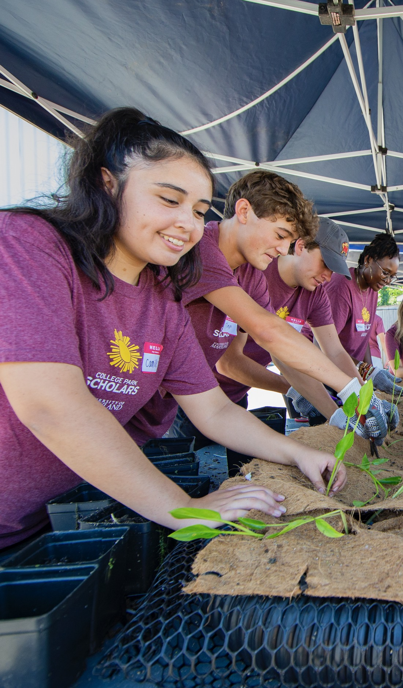
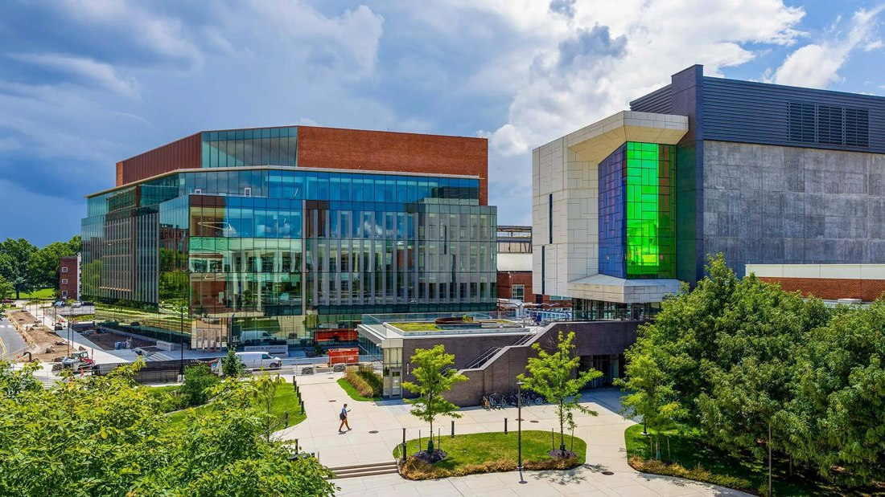
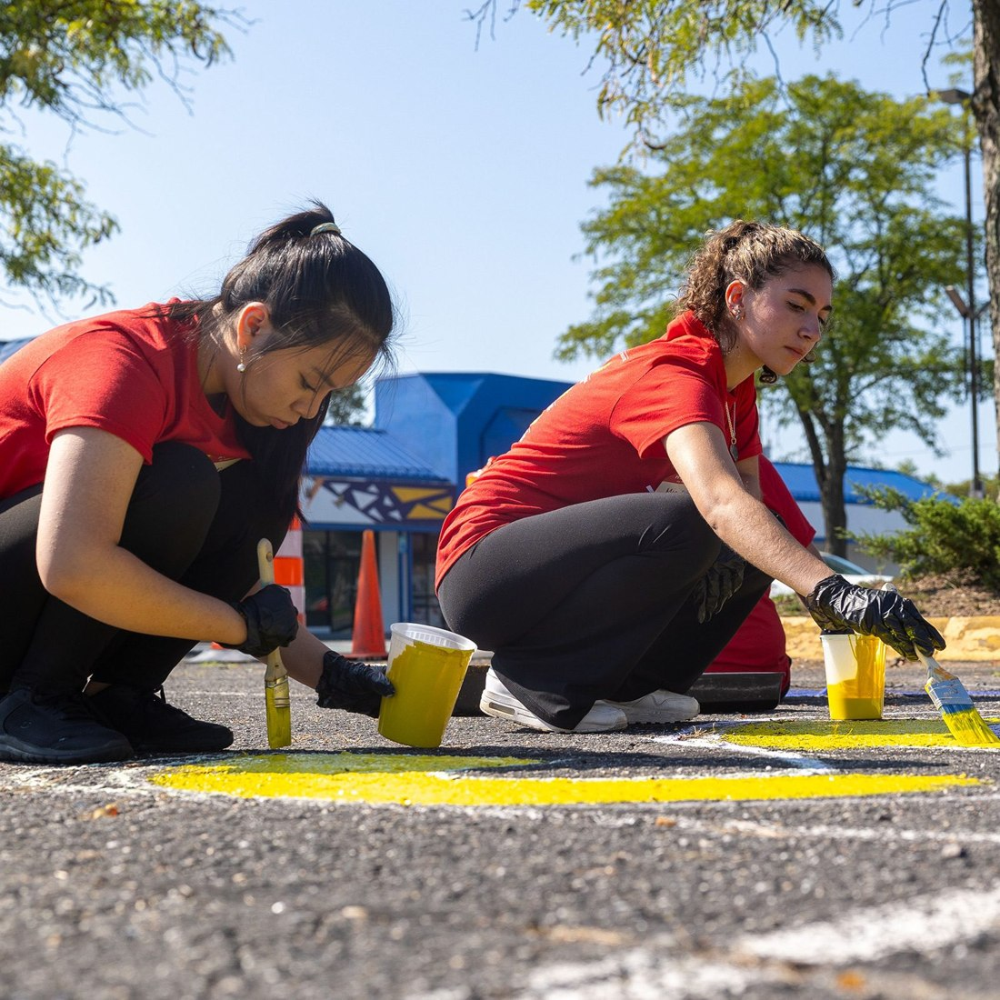
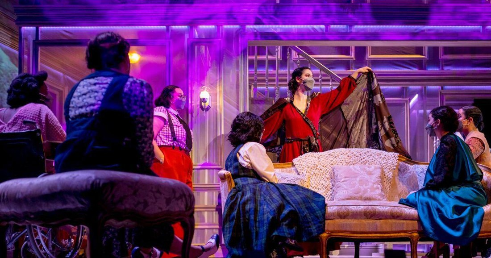
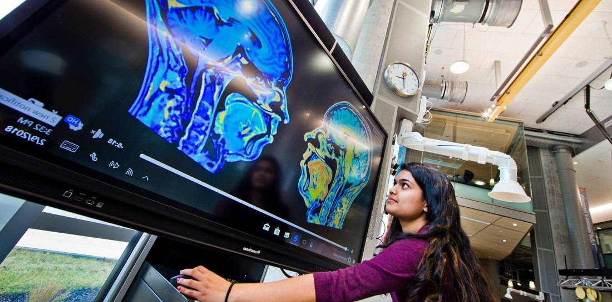

We Reimagine Learning
The University of Maryland is changing teaching and learning to prepare tomorrow's leaders to adapt to the future of work.

Big ideas.
Real-world impact.
At Maryland, learning reaches beyond the classroom. Discover new perspectives, work across disciplines and turn what you know into something that matters.

APRIL IS DO GOOD MONTH
In April, Terps come together to accelerate impact in our communities.
Find a different way forward

Create what comes next
Experiment, make connections and build an entrepreneurial mindset through hands-on learning.

Put purpose into practice
Connect an idea for social change with mentoring, skills and a community ready to help.
Small sparks. Extraordinary possibilities.
courses exploring innovation and creative thinking
Terps recognized by Forbes 30 Under 30 since 2011
years in the undergraduate entrepreneurship top 10
A snapshot from We Reimagine Learning. Figures reflect the supplied reference page.
A classroom without walls

Creativity crosses every discipline.
Bring a new lens to a familiar question. Explore the connections between art, science and technology—and discover what happens when different ways of thinking meet.

Turn a question into a possibility.
Go beyond the lecture. Research, build and test ideas with people whose perspectives are different from your own.
Make your next step count.
Find a cause you care about. Work with a community, share your skills and learn by taking action.
Public research universities are uniquely positioned to make a positive difference in the lives of our citizens and across the globe, because universities have a combination of values, assets and problem-solving approaches that simply doesn’t exist elsewhere.
Darryll J. Pines
President, University of Maryland
See an idea take shape
Where your interests meet your impact
Learning with a purpose. Impact at scale.
inaugural Do Good Campus Signature Initiatives
campus proposals considered for the first cohort
UMD Fellows students participating each year
Source: Maryland Today, April 30, 2026.
Your next step starts here
Start with the Academy for Innovation and Entrepreneurship. Explore courses and workshops that help you experiment, collaborate and move an idea forward.
The Do Good Institute connects students with ways to serve, learn and grow. Explore mentoring and support for your own social impact project.
Arts for All brings creative perspectives into conversation with other disciplines. Follow a new interest through events, projects and opportunities across campus.
Big change starts with you.
Bring your curiosity. Find your purpose. Join a campus that puts ideas into action.
Come together. Make something happen.
Do Good Month highlights · April 2026
Terps Earth Day Park Clean Up
College Park community
Join neighbors and fellow Terps for a morning of community care.
Do Good Challenge
Samuel Riggs IV Alumni Center
Celebrate student teams turning their commitment to change into action.
Maryland Day
University of Maryland, College Park
Explore campus through a day of discovery, creativity and hands-on experiences.